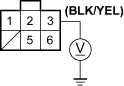
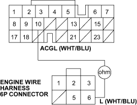

If the charging system indicator does not come on or does not go off, or the battery is dead or low, test the following items in the order listed below:
Battery, refer to the 2001 Civic Shop Manual (see page 22-79)
Charging system indicator
Alternator and regulator circuit
Alternator control system
Charging System Indicator Test
- Turn the ignition switch ON (II).
Does the charging system indicator come on?
YES - Go to step 2.
NO - Go to step 3.
- Start the engine.
Does the charging system indicator go off?
YES - Charging system indicator circuit is OK. 
NO - Go to step 3.
- Turn the ignition switch OFF.
- Troubleshoot the multiplex control system, refer to the 2001 Civic Shop Manual (see page 22-273).
Is the multiplex control system OK?
YES - Go to step 5.
NO - Check the multiplex control system as indicated by the DTC, refer to the 2001 Civic Shop Manual (see step 8 on page 22-274).
- Disconnect the engine wire harness 6P connector from the starter sub-harness 6P connector.
- Measure the voltage at the No. 3 terminal of the engine wire harness 6P connector with the ignition switch ON (II).
ENGINE WIRE HARNESS 6P CONNECTOR

Wire side of female terminals
Is there battery voltage?
YES - Go to step 7.
NO - Check for a blown No.4 (10A) fuse in the under-dash fuse/relay box. If the fuse is OK, repair open in the wire between the alternator and the under-dash fuse/relay box.
- Turn the ignition switch OFF.
- Disconnect ECM connector B (24P).
- Check continuity between the ECM connector terminal B10 and engine wire harness 6P connector terminal No. 6.
ECM CONNECTOR B (24P)

Wire side of female terminals
Is there continuity?
YES - Go to step 10.
NO - Repair open in the wire between the alternator and the ECM.